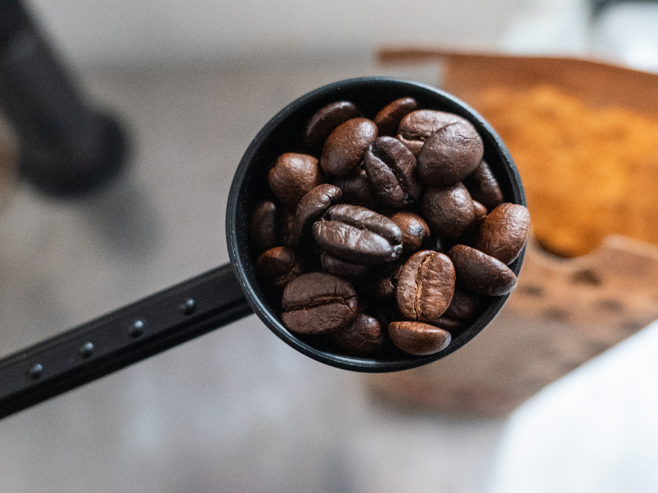
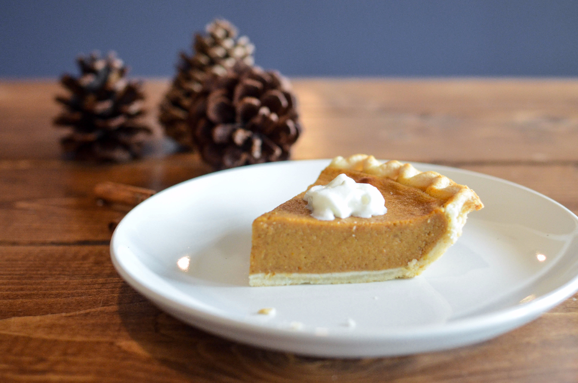
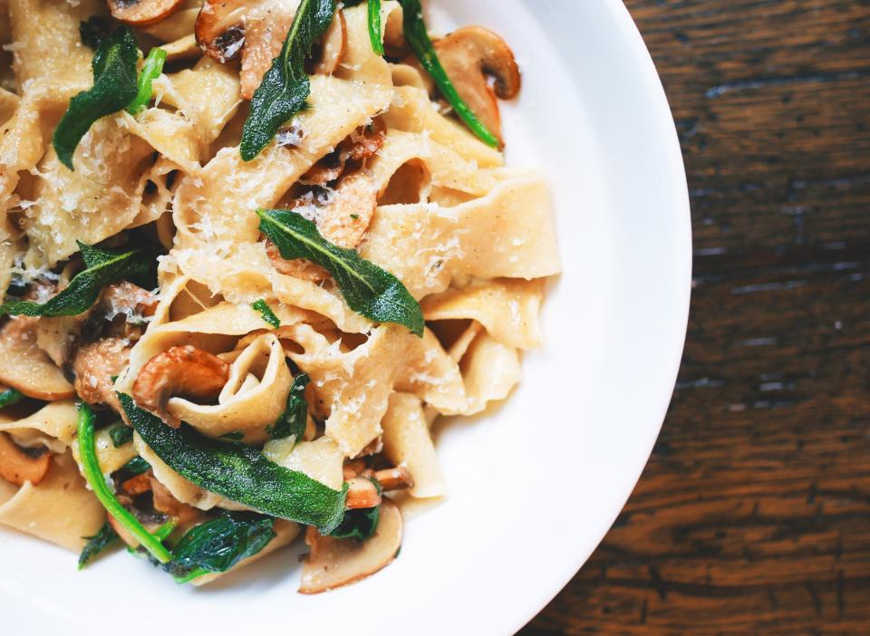

森で味わう、自家焙煎と手づくりの甘味
一杯のコーヒーにも、ひと皿のタルトにも、この森で過ごす時間をちょっと特別にする手づくりの工夫があります。

自家焙煎コーヒー
店内で焙煎する自家焙煎コーヒーは、gaiaの時間の軸になっている一杯です。ブナ林の静けさの中、できたての香りとともにゆっくり味わってください。豆の詳しい産地やブレンドの情報は、店舗情報の確定後にあらためてご紹介します。

カボチャタルト
ご来店者様から「逸品」と評していただいたカボチャタルト。かぼちゃの優しい甘さを活かした、手づくりならではの味わいです。コーヒーとの組み合わせで、森での休憩時間がより豊かになります。

テイクアウト可
ジンジャープリン
生姜とプリンを組み合わせる、という発想から生まれたgaiaの名物。自家製の卵を使い、ひとつひとつ丁寧に仕上げています。「生姜とプリンをコラボさせたアイデアが最高」というお声もいただいた、ここでしか味わえないひと品です。テイクアウトもできるので、苗場スキー場やフジロック会場への移動中のおやつにもどうぞ。
テイクアウトについては店頭・Instagramでご確認ください
お食事メニューについて
コーヒーや甘いものだけでなく、お食事メニューもご用意しています。価格・内容の詳細は貴店確認の上、追って掲載いたします。森歩きやスキー・フェスの合間の腹ごしらえにも、ぜひお立ち寄りください。
※価格・内容は貴店確認後に掲載します(現時点ではプレースホルダー表記です)